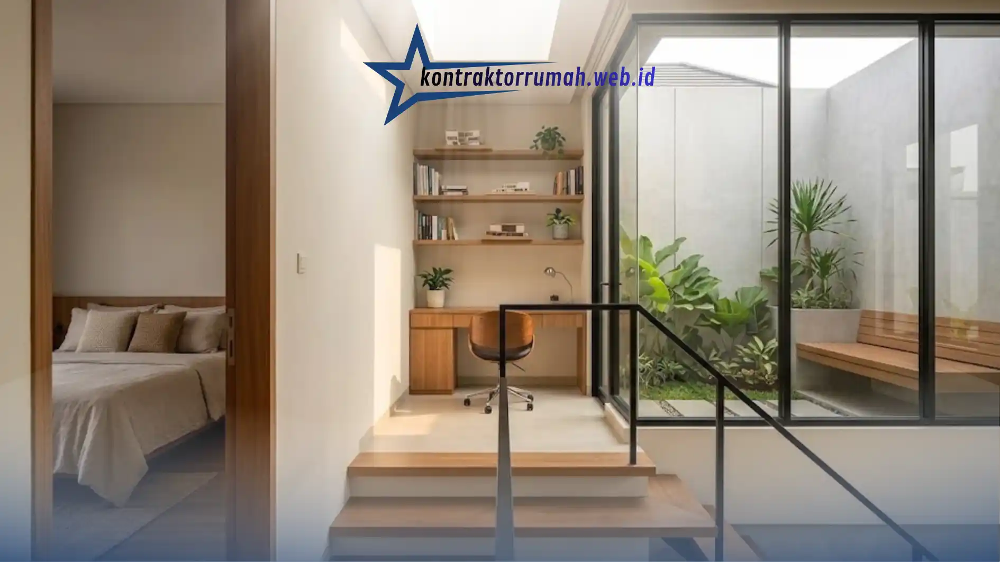

Keterbatasan lahan sering kali menjadi hambatan utama saat kita butuh ruang lebih di rumah. Ingin punya ruang keluarga yang lebih lega, tambah kamar untuk anak, atau sekadar membuat area kerja pribadi, tapi sisa tanah sudah habis terpakai.
Kalau dipaksakan membangun semuanya di lantai satu dengan banyak sekat, rumah malah akan terasa sumpek dan gelap. Sirkulasi udara menjadi buruk, cahaya matahari sulit masuk, dan alih-alih menjadi tempat istirahat yang menenangkan, rumah yang terlalu padat justru membuat penghuninya mudah merasa penat setiap hari. Belum lagi kalau keluarga terus bertambah anggota — ruang yang tadinya cukup untuk 3-4 orang bisa terasa sangat sempit setelah 5 tahun.
Poin Penting
- Membangun ke atas (2 lantai) memaksimalkan fungsi lahan sekaligus memungkinkan zonasi ruang publik dan privat.
- Konsep open plan di lantai dasar membuat rumah terasa jauh lebih luas dan interaksi keluarga lebih hangat.
- Void dan jendela kaca besar meningkatkan sirkulasi udara serta pencahayaan alami tanpa menambah luas tanah.
- Tangga dan roof garden bisa dijadikan elemen estetika sekaligus fungsi tambahan rumah.
- Wajib cek soil test, IMB/PBG, dan gambar kerja detail sebelum kontrak kerja ditandatangani.
Kenapa Rumah 2 Lantai Jadi Solusi Paling Masuk Akal
Solusi paling cerdas untuk lahan terbatas adalah membangun ke atas, bukan ke samping. Menerapkan desain rumah 2 lantai modern tidak hanya memaksimalkan fungsi lahan, tetapi juga memberikan keleluasaan untuk menciptakan zonasi ruang: area publik seperti ruang tamu dan dapur di lantai bawah, area privat seperti kamar tidur di lantai atas.
Zonasi seperti ini juga punya manfaat psikologis. Tamu yang berkunjung tidak perlu melewati area pribadi keluarga, dan penghuni rumah tetap punya ruang privat yang benar-benar tenang di lantai atas — termasuk area kerja pribadi yang makin sering dibutuhkan sejak banyak orang bekerja dari rumah.

Lantai atas bisa dimanfaatkan sebagai area privat, termasuk ruang kerja pribadi yang tenang jauh dari lalu-lalang tamu.
Namun, membangun 2 lantai butuh perhitungan struktur yang lebih matang dibanding rumah 1 lantai biasa. Kesalahan pada pondasi atau distribusi beban bisa berakibat fatal jika dikerjakan asal-asalan — mulai dari retak rambut di dinding hingga risiko ambruk dalam kasus terburuk. Karena itu, menggandeng kontraktor rumah yang berpengalaman di bidang arsitektur modern adalah langkah investasi yang sangat disarankan, bukan sekadar pengeluaran tambahan.
Konsep Open Plan di Lantai Dasar
Agar rumah 2 lantai milikmu tidak hanya luas tapi juga nyaman dihuni, langkah pertama yang bisa diterapkan adalah menghilangkan sekat permanen antara ruang tamu, ruang makan, dan dapur di lantai dasar. Tanpa dinding pembatas, cahaya dan udara bisa mengalir bebas ke seluruh area publik, sekaligus membuat interaksi antaranggota keluarga terasa lebih hangat karena tidak ada ruang yang terisolasi.
Manfaatkan Void untuk Sirkulasi Udara
Buat langit-langit yang tinggi menembus lantai dua di area ruang keluarga. Void membuat sirkulasi udara jauh lebih sejuk secara alami dan menciptakan kesan megah tanpa perlu menambah luas tanah. Udara panas yang naik akan terdorong keluar melalui bukaan di bagian atas void, sehingga suhu ruangan di bawahnya tetap terasa nyaman meski tanpa AC menyala sepanjang hari.
Jendela Kaca Berukuran Besar
Pasang jendela kaca besar di fasad depan atau area balkon agar rumah selalu terang di siang hari dan hemat energi listrik. Selain menghadirkan pencahayaan alami yang maksimal, jendela besar juga memberi kesan modern dan lapang pada tampilan fasad rumah 2 lantai.
Tangga sebagai Elemen Estetika
Alih-alih menyembunyikannya, jadikan tangga sebagai focal point desain dengan material kayu atau besi hollow yang minimalis. Tangga yang didesain terbuka (tanpa railing masif) juga membantu cahaya dan pandangan mata tetap menembus antar-lantai, memperkuat kesan luas pada rumah.
Balkon atau Roof Garden
Manfaatkan atap atau sisi lantai dua sebagai area hijau kecil, tempat bersantai tanpa perlu keluar rumah. Roof garden atau balkon dengan beberapa pot tanaman tidak hanya mempercantik tampilan rumah, tapi juga memberi ruang bernapas tambahan di tengah keterbatasan lahan.
Berikut ringkasan lima ide desain di atas beserta manfaat utamanya:
| Ide Desain | Manfaat Utama |
|---|---|
| Konsep Open Plan | Ruang terasa lebih luas, interaksi keluarga lebih hangat |
| Void | Sirkulasi udara sejuk, kesan megah tanpa tambah lahan |
| Jendela Kaca Besar | Cahaya alami maksimal, hemat energi listrik |
| Tangga Estetik | Focal point desain, cahaya menembus antar-lantai |
| Balkon/Roof Garden | Area hijau tambahan, tempat bersantai tanpa keluar rumah |
Hal yang Perlu Dipastikan Sebelum Mulai Membangun
Sebelum menandatangani kontrak kerja dengan kontraktor, ada beberapa hal yang wajib dicek terlebih dahulu:
- Uji kelayakan tanah (soil test): penting untuk memastikan pondasi yang dipilih sesuai kondisi tanah, terutama di area padat penduduk.
- Izin Mendirikan Bangunan (IMB/PBG): pastikan legalitas bangunan 2 lantai sudah sesuai regulasi setempat sebelum konstruksi dimulai.
- Gambar kerja yang detail: hindari kontraktor yang hanya memberi sketsa kasar tanpa gambar teknis yang jelas untuk tukang di lapangan.
Catatan dari tim Kontraktor Rumah: Kontraktor Rumah selalu memulai proyek 2 lantai dengan soil test dan gambar kerja detail terlebih dahulu, sehingga zonasi ruang, struktur, dan estetika desain bisa dieksekusi bersamaan tanpa drama di tengah proses pembangunan.
FAQ Seputar Desain Rumah 2 Lantai
Rumah 2 lantai bukan sekadar solusi menambah ruang, tapi juga peluang menghadirkan desain yang lebih fungsional dan estetis. Kuncinya ada pada perencanaan yang matang sejak awal, mulai dari zonasi ruang, uji kelayakan tanah, hingga pemilihan material.